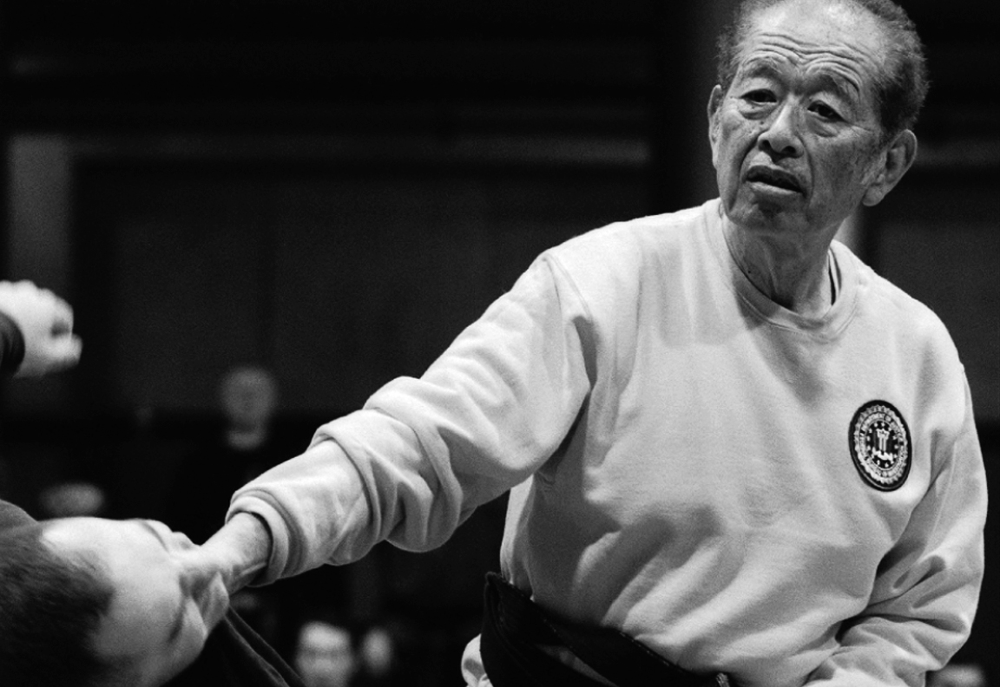

Togakure Ryû Ninpo Taijutsu

"Hiding Behind the Door School"
Dr. Hatsumi is the 34th Soke

Overview:
This ryû forms much of the basis for the Ninjutsu techniques taught in the Bujinkan and is our second oldest school in the nine traditions. Togakure Ryû Ninpo includes various punching, throwing, and levering techniques. It is known by low and wide stances and also by very strong punches, which are mostly directed towards the opponent's eyes, ears, and diaphragm. This system is famous for its use of such weapons as shuko and shuriken. The emphasis of this ryû is on escape and spying. Ninjutsu involves the use of specialized weapons, espionage, concealment, sabotage, breaking in and escaping, etc.
Togakure Ryû uses a lot of techniques that incapacitate, often brutally, and is very deceptive. Along with Taijutsu, this school includes arts such as Ken Jutsu (sword), Shuriken Jutsu (throwing blades), Shuko (hand claws), Metsubushi (blinding powders), and Shindake (bamboo tube for breathing underwater). A large part of this school teaches how to use the elements and nature as weapons such as in Ka Jutsu (fire arts) and Sui Jutsu (water arts). This school also includes various acrobatics, methods of walking silently, and ways of running up steep inclines. Daisuke Togakure founded this ryû in the late 1100s.
Eighteen Fundamental Skills:
- Tai Jutsu - Unarmed Combat
- Ninja Ken - Ninja Sword
- Bo-Jutsu - Stick and Staff Fighting
- Shuriken-Jutsu - Throwing Blades
- Yari-Jutsu - Spear Fighting
- Naginata-Jutsu - Halberd Fighting
- Kusari-Gama - Chain and Sickle Weapon
- Kayaku-Jutsu - Fire and Explosives
- Henso-Jutsu - Disguise and Impersonation
- Shinobi-Iri - Stealth and Entering Methods
- Ba-Jutsu - Horsemanship
- Sui-Ren - Water Training
- Bo-Ryaku - Strategy
- Cho Ho - Espionage
- Inton-Jutsu - Escape and Concealment
- Ten-Mon - Meteorology
- Chi-Mon - Geography
- Seishin Teki Kyoyo - Spiritual Refinement
Soke of Togakure Ryû:
- Ikai
- Hogenbo
- Sakabe, Tendo
- Hachiryu, Nyodo Tenei era 1110
- Kimon, Hyobei Ninpei era 1151
- Kasumigakure, Doshi
- Togakure (Nishina) Daisuke Oho era 1161
- Minamoto no Kanesada, Shima Kosanta 1180
- Togakure, Goro 1200
- Togakure, Kosanta
- Koga, Kosanta
- Kaneko, Tomoharu
- Togakure, Ryuho
- Togakure, Gakuun
- Kido, Koseki
- Iga, Tenryu
- Ueno, Rihei
- Ueno, Senri
- Ueno, Manjiro
- Iizuka, Saburo
- Sawada, Goro
- Ozaru, Ippei
- Kimata, Hachiro
- Kataoka, Heizaemon
- Mori, Ugenta
- Toda, Gobei
- Kobe, Seiun
- Momochi, Kobei
- Tobari, Tenzen
- Toda, Nobutsuna Seiryu Kwanyei era 1624 - 1644
- Toda, Nobuchika Fudo Manji era 1658 - 1681
- Toda, Kangoro Nobuyasu Tenna era 1681 - 1704
- Toda, Eisaburo Nobumasa Hoyei era 1704 - 1711
- Toda, Shinbei Masachika Shotoku era 1711 - 1736
- Toda, Shingoro Masayoshi Gembun era 1736 - 1764
- Toda, Daigoro Chikahide Meiwa era 1764 - 1804
- Toda, Daisaburo Chikashige Bunkwa era 1804 - ?
- Toda, Shinryuken Masamitsu ? - 1907 (b.1824 - d.1909)
- Takamatsu, Toshitsugu 1907 - 1968 (b.1887 - d.1972)
- Hatsumi, Masaaki 1968 - (b.1931)